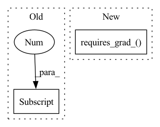

Pattern ID :23310
Before Change
// misc.nan_to_num(param.grad, nan=0, posinf=1e5, neginf=-1e5, out=param.grad)
if "G" in phase["name"]:
for param_group in optimizers["optimizer_G"].param_groups:
param_group["params"][0] .requires_grad = False
optimizers["optimizer_G"].step() // 更新参数
elif "D" in phase["name"]:
for param_group in optimizers["optimizer_D"].param_groups:After Change
if "G" in phase["name"]:
optimizers["optimizer_G"].zero_grad(set_to_none=True)
self.mapping.requires_grad_(True)
self.synthesis.requires_grad_( True)
// for param_group in optimizers["optimizer_G"].param_groups:
// param_group["params"][0].requires_grad = True
elif "D" in phase["name"]:
optimizers["optimizer_D"].zero_grad(set_to_none=True)In pattern: SUPERPATTERN
Frequency: 4
Non-data size: 2
Instances Fragment ID: 73470763
Project Name: miemie2013/miemiegan
Commit Name: 431068dfd98c432e71db955dcb8a6e7ac3a439aa
Time: 2022-04-08
Author: 53960695+miemie2013@users.noreply.github.com
File Name: mmgan/models/architectures/styleganv2ada_model.py
M Class Name: StyleGANv2ADAModel
N Class Name: StyleGANv2ADAModel
M Method Name: train_iter(3)
N Method Name: train_iter(3)
M Parent Class:
N Parent Class: torch.nn.Module
M File Name: mmgan/models/architectures/styleganv2ada_model.py
N File Name: mmgan/models/architectures/styleganv2ada_model.py
M Start Line: 351
M End Line: 387
N Start Line: 316
N End Line: 427
Before Change
sequence_input, linear_param0, linear_param1, bn_weight0, bn_bias0, bn_weight1, bn_bias1 = ctx.saved_tensors
if not sequence_input.requires_grad:
return (None,) * 9
out0, out1 = ctx.output_list[0] .chunk(2, -1)
with torch.no_grad():
inp0 = out0 - ReversibleRNNFunction._calc(out1, sequence_input, bn_weight1, bn_bias1, linear_param1)
inp1 = out1 - ReversibleRNNFunction._calc(inp0, sequence_input, bn_weight0, bn_bias0, linear_param0)After Change
with torch.enable_grad():
fn_input = torch.cat([inp0, inp1], -1)
fn_input.detach_()
fn_input.requires_grad_( True)
args = (fn_input, sequence_input, linear_param0, linear_param1, bn_weight0, bn_bias0, bn_weight1, bn_bias1)
grad_out = ReversibleRNNFunction._forward_pass(*args)
grad_out.requires_grad_(True)
grad_out = torch.autograd.grad(grad_out, args, grad_output) Fragment ID: 73470765
Project Name: homebrewnlp/homebrewnlp
Commit Name: a0f0b4030e607ddb8baa74812668409814dc9a48
Time: 2020-07-13
Author: 39779310+ClashLuke@users.noreply.github.com
File Name: module.py
M Class Name: ReversibleRNNFunction
N Class Name: ReversibleRNNFunction
M Method Name: backward(2)
N Method Name: backward(2)
M Parent Class: torch.autograd.Function
N Parent Class: torch.autograd.Function
M File Name: module.py
N File Name: module.py
M Start Line: 50
M End Line: 58
N Start Line: 51
N End Line: 67
Before Change
grad_out = list(
torch.autograd.grad(grad_out, (fn_input, sequence_input, linear_param0, linear_param1), grad_output,
allow_unused=True))
grad_out[1] = grad_out[1][:, :-2]
fn_input.detach_()
fn_input.requires_grad_(True)
if not ctx.top:After Change
_sequence_input, linear_param0, linear_param1, pos_enc = ctx.saved_tensors
depth = ctx.depth
sequence_input = torch.cat([_sequence_input, pos_enc], -1)
sequence_input.requires_grad_( _sequence_input.requires_grad)
if not sequence_input.requires_grad:
return (None,) * 8
out0, out1 = ctx.output_list.pop(0).chunk(2, 1)
with torch.no_grad(): Fragment ID: 73470764
Project Name: homebrewnlp/homebrewnlp
Commit Name: d56dbd9d9e767e94890fb9281e9c69029cdc330d
Time: 2020-07-16
Author: 39779310+ClashLuke@users.noreply.github.com
File Name: module.py
M Class Name: ReversibleRNNFunction
N Class Name: ReversibleRNNFunction
M Method Name: backward(2)
N Method Name: backward(2)
M Parent Class: torch.autograd.Function
N Parent Class: torch.autograd.Function
M File Name: module.py
N File Name: module.py
M Start Line: 79
M End Line: 104
N Start Line: 57
N End Line: 80
Before Change
target1 = features1[-1]
target1 = target1.cpu().data.numpy()[0, :]
target2 = features2[-1]
target2 = target2.cpu().data.numpy()[0, :]
print("target shape:", target1.shape)
"""After Change
print("output", output1.size())
similarity = 1.0 / F.pairwise_distance(output1, output2, 2)
similarity = similarity.requires_grad_( True)
self.feature_module.zero_grad()
self.model.zero_grad()
similarity.backward(retain_graph=True) Fragment ID: 73470767
Project Name: rvl-lab-utoronto/video_similarity_search
Commit Name: acce7be1aa24b87320dd3bf01eeaa9f29d08d264
Time: 2020-08-05
Author: salar77h@gmail.com
File Name: video_gradcam.py
M Class Name: VideoSimilarityGradCam
N Class Name: VideoSimilarityGradCam
M Method Name: __call__(3)
N Method Name: __call__(3)
M Parent Class:
N Parent Class:
M File Name: video_gradcam.py
N File Name: video_gradcam.py
M Start Line: 114
M End Line: 168
N Start Line: 153
N End Line: 180